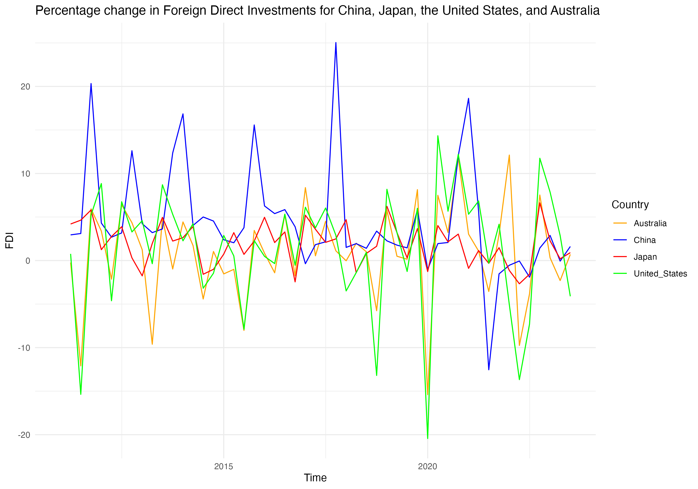
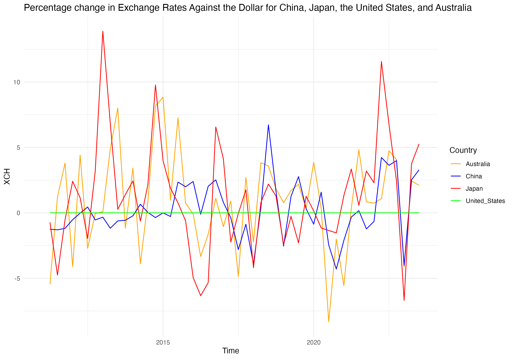
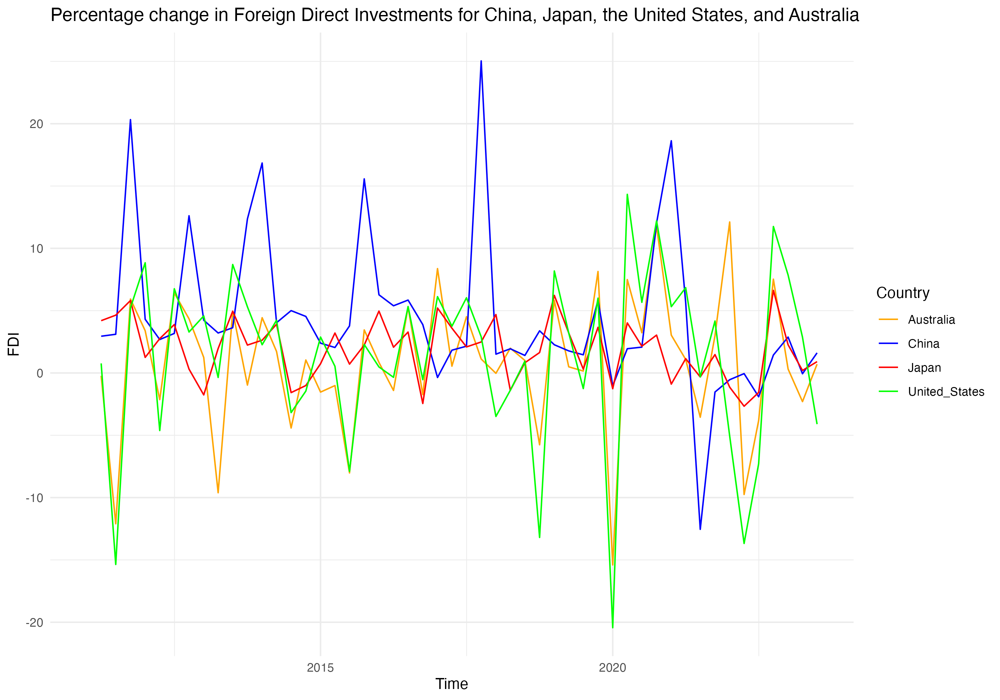
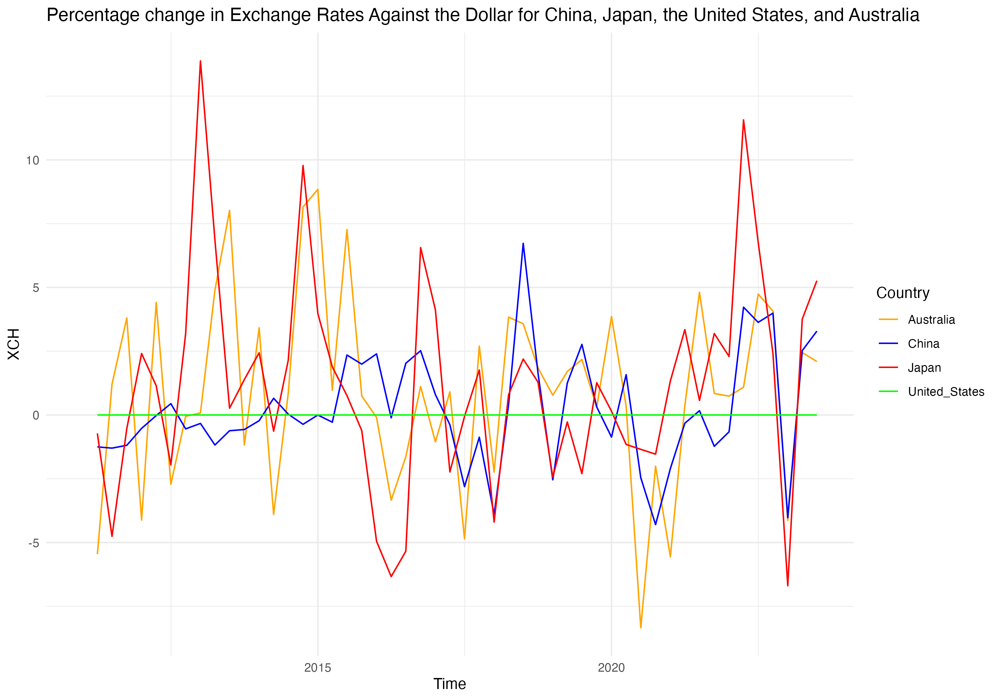
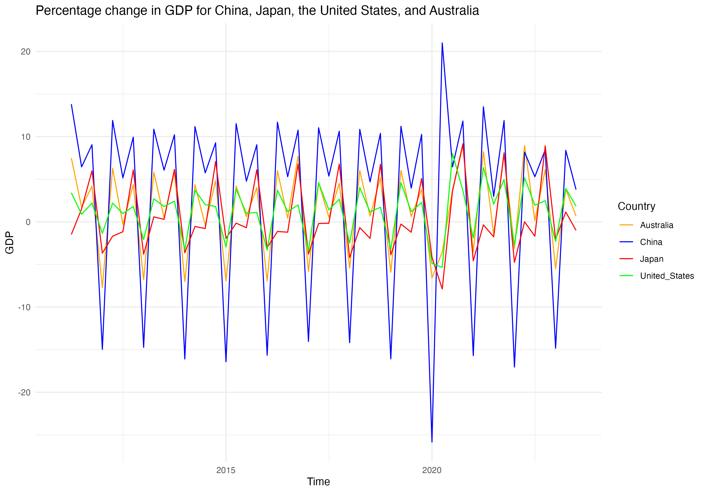
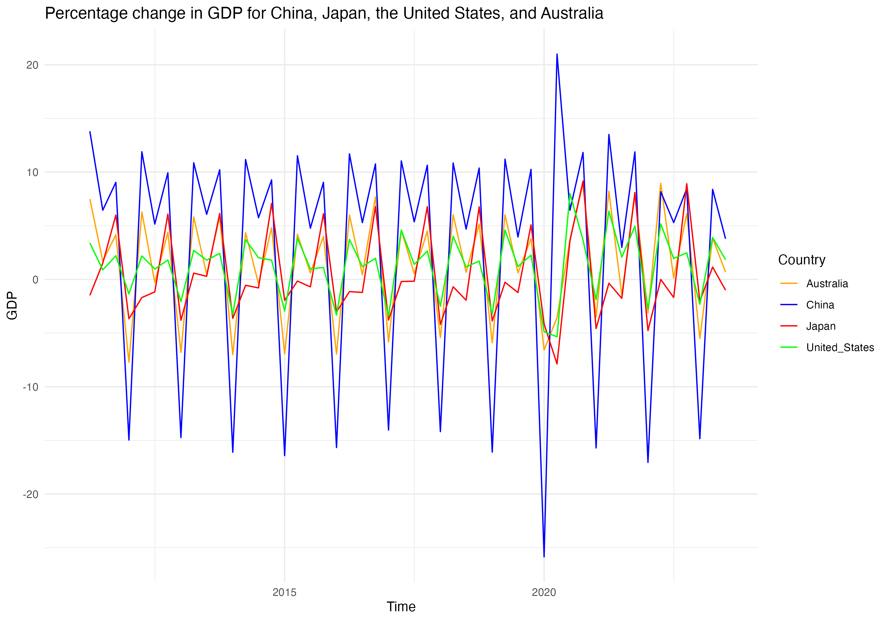

Global Echoes: Analyzing the Interplay of Economic Indicators Across Leading Economies
1. The Question Objective, and Motivation
Objective Construct a Bayesian Vector Autoregression model to forecast major macroeconomic indicators for the United States, Australia, Japan, and China to facilitate an investigation into the prospective interdependencies between the economies of these nations.
Question: This research project will examine how trade relationships, investment flows, monetary policy environments, and economic performances within the United States, Australia, Japan and China mutually influence each other, and assess the implications of these interactions for predicting future values of these economic indicators.
Motivation: Since the onset of the COVID-19 pandemic, the global economic landscape has witnessed a series of unprecedented shifts in key macroeconomic indicators, spurred by governments’ adoption of varied expansionary monetary policies. Initially, to buffer their economies, many nations implemented expansive monetary strategies, later swiftly transitioning to interest rate hikes in a bid to manage surging inflation rates—a scenario not seen in decades. The pandemic’s disruption to trade further exacerbated inflationary pressures for some economies, highlighting the intricate interdependencies among major economies with significant trade and financial ties. This period recorded stark contrast in inflation levels, with unprecedented highs in the US and Australia and notably low inflation in China and Japan. Amidst this turmoil, a divergence in economic paths also became apparent, the United States and Australia have witness robust economic rebounds, whereas China and Japan saw more tepid recoveries. This research aims to dissect the nuanced web of economic interdependencies between the United States, Australia, Japan, and China, analyzing how their trade relationships, investment flows, and monetary policy environments have mutually influenced their economic performances. Additionally, it seeks to understand the ramifications of these dynamics for the predictive accuracy of future economic indicators, offering insights into the evolving global economic order.
#2. Data and their properties
Proposed Dataset: This research project will utilize data from the International Monetary Fund’s (IMF) extensive database, which offers a comprehensive collection of global economic information. The IMF’s collection includes several key databases such as the World Economic Outlook Databases, International Financial Statistics (IFS), Government Finance Statistics. The analysis will predominantly focus on the IFS database, which encompasses an sizeable collection of financial and economic data from across the global, featuring 1,681 distinct indicators such as consumer price index, interest rates, exchange rates, national accounts, government finance statistics. The data is available in various frequencies – annual, semi-annual, quarterly, monthly, daily, and weekly. As this research is primarily focused on analyzing macroeconomic data that are published on a monthly or quarterly basis, quarterly data from Q1 2011 to Q3 2023 will be used. The analysis will examine key macroeconomic variables including consumer price indexes, foreign direct investments, exchange rates, balance of payments, and the national gross domestic product of the United States, Australia, Japan, and China.
Variables and Motivation:
| Variables | Original Unit | Final Unit | Mnemonic | Code |
|---|---|---|---|---|
| Prices, Consumer Price Index, All items, Previous period | % Change | % Change | CPI | PCPI_PC_PP_PT |
| International Investment Positions, assets, Direct Investment | US Dollars | % Change | FDI | IAD_BP6_USD |
| Exchange Rates, Domestic Currency per U.S. Dollar, Period Average | US Dollars | % Change | XCH | ENDA_XDC_USD_R |
| Balance of Payments, Current Account, Goods and Services, Net | US Dollars | % Change | BOP | BGS_BP6_USD |
| Gross Domestic Product, Nominal, Unadjusted, Domestic Currency | Domestic Currency | % Change | GDP | NGDP_NSA_XDC |
The variables included in this study were chosen with the objective to include key economic indicators that are susceptible to changes in other nations while also having experienced significant fluctuations over the past decade. These variables were chosen not only for their ability to provide insights into the trade relations, investment dynamics and monetary policy frameworks, but also for their roles as barometers of overall economic health and performance. Foreign direct investment (FDI) is a direct indicator of cross- border investment flows and serves as a proxy for economic confidence and integration between nations. Exchange rates directly impact trade balances and investment flows, influencing economic performances. By examining the volatility and trends in exchange rates, insights can be gleaned into how monetary policies and economic conditions in one country can affect its trade partners. Balance of payments is a comprehensive measure that captures the transactions between a country and the rest of the world, offering a holistic view of its economic interactions. For example, some view changes in balance of payments as largely a result of imports and exports, which can cause one country to import the inflation of another country and vice versa. GDP growth is the ultimate measure of economic performance, encapsulating the outcome of various economic activities and policies. Analyzing GDP in the form of percentage change allows for assessing economic momentum and comparing growth rates across countries and over time, offering a clear picture of economic health and trends. Foreign direct investment, exchange rates, balance of payments and gross domestic products were transformed into percentage change from the previous period, aiming to standardize the data, facilitate temporal comparisons and enhancing the interpretability of trends over time. The presence of cyclical trends in the variables, alongside the observed impact of lagged values on future outcomes, highlights the suitability of the Bayesian Vector Autoregression model for our analysis. This model can well capture the temporal dynamics and interdependencies inherent in these economic indicators, offering a robust framework for understanding the nuanced interactions and feedback loops that characterize their behavior over time.
  
   

3. The Model and Hypothesis
VAR(p) Model:
\[ Y = XA+E\] \[E|X \sim \mathcal{MV}_{T \times N}(0_{T \times N},\Sigma, I_T)\] \[ A = \begin{bmatrix} \mu_0^T \\ A_1^T \\ \vdots \\ A_p^T \end{bmatrix} , \quad Y = \begin{bmatrix} y_1^T \\ y_2^T \\ \vdots \\ y_T^T \end{bmatrix} , \quad x_t = \begin{bmatrix} 1 \\ y_{t-1}^T \\ \vdots \\ y_{t-p}^T \end{bmatrix} , \quad X = \begin{bmatrix} x_1^T \\ x_2^T \\ \vdots \\ x_T^T \end{bmatrix} , \quad E = \begin{bmatrix} e_1^T \\ e_2^T \\ \vdots \\ e_T^T \end{bmatrix} \]
where
- T is the number of time periods under consideration
- N is the number of variables, in our case, N = 20
- P is the number of lags
- Y is a 𝑇 × 𝑁 matrix of variables of response variables we aim to model.
- A is a (1+𝑝×𝑁)xN matrix of coefficients.
- E is a𝑇×𝑁 matrix of the error terms
- X is a𝑇×(1+𝑝×𝑁) matrix of covariates
- Σ is a N×N matrix representing the row-specific covariance matrix
- \(I_T\) is a𝑇×𝑇 identity matrix representing the column specific covariance matrix
- E|X follows a matrix-variate normal distribution